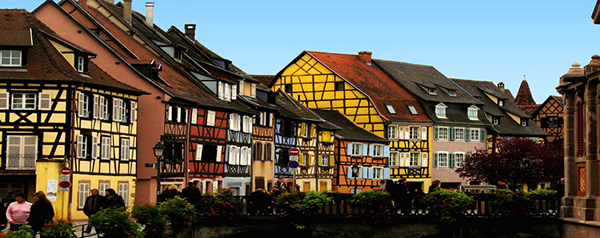

各国互惠生分析
常见互惠生分析
每个国家学生都各自有特点，我们的分析只代表部分个体和我们的经验认知，仅作参考！
德国
生活中有很多德国制造，认真到刻板的民族才会百年如一日地坚持高质量。德国人的认真负责和守时，也成为互惠生领域里一道亮丽的风采。
ASC推荐
德国互惠生通常都是成长于两个孩子的家庭，父母都有职业的居多。德国学生都很独立，这和德国的家庭教育观念有关，他们从小就注重让孩子从小生活学习自理。很多国人对德国人从小培养孩子的独立性方法大为推崇。德国互惠生通常在高中毕业，继续进行大学深造之前选择前往海外，以互惠生的身份为年轻的自己增添经验和履历。
德国互惠生通常英语流利而且能说多门外语。申请人大多在6个月以上。他们具备综合的照顾孩子经验：自己的弟弟妹妹，幼儿园实习经验，还有兼职老师经历等等。德国学生非常尊重长辈，也因此非常愿意遵守中国父母对孩子的教育准则。
对于时间观念和守时非常强！能够认真而实时地完成时间表内的职责，但对于额外时间的弹性安排虽然可以接受，但更倾向提前讲清，而很难接受临时变动。这一点务必请家庭注意：从“缺点”上来说，德国互惠生很“不讲人情”，变通性不够；而从优点上来说，对于从小培养孩子的时间管理观念，还是很有益处的。
德国互惠生相对而言还是比较适合中国家庭，中国家庭应注意给他们提前做好计划以及时间表，包括允许他们通过自己的方法来“管教”孩子。从而有效地提高孩子注意力和时间观念。特别需要注意的是：时间表的遵守。
美国
美国学生最大的特点就是“有主见”！他们很有自己的想法，美国文化中有个人英雄主义成分，也有追求自由的成分，所以对于邀请这样的互惠生，尽管很多家庭认为已经有了对美国文化的充分了解，但那往往是来自于美国的表象，真正和美国学生生活在一起，还是有一些要特别注意的地方。
ASC推荐
美国学生的家庭背景比较多样化，互惠短期居多，3-6个月的很普遍。虽然有些学生出国前就有12个月的“可提供”时间，但他们也愿意先签3个月或6个月的合同来试验一下。如果中国和中国的家庭让他们感到舒适，就会把合同延长。
总体美国互惠生比较欧洲学生的“韧性”来说，更像擅长短跑冲刺型选手。他们刚一开始会很容易和家庭以及孩子打成一片，家庭这个时期的蜜月感非常强，但也许正因为刚开始期望过高，所以到了第二个阶段的磨合期容易发生矛盾，需要提前注意。但总体来说，把握好项目规则之后，对美国学生的约束最好的办法就是“软硬兼施”。
美国学生好动，愿意出去玩。他们在家里经常显得“宅”不住，完成自己时间表的责任后，有自由时间是很喜欢出去玩的。
美国学生比较适合年龄大一些的孩子。比如小学高年级或初中生，因为沟通起来会比较容易。美国学生对于和年龄特别小的孩子往往耐心不够。事实上，由于英语是他们的母语，他们很难做到永远去说“容易”的英语。就像不是每个中国人都能够胜任对外汉语教学工作一样。 而年龄大的孩子由于可以交流沟通一些主题性的话题，所以与美国哥哥或姐姐交往更容易。一些看美剧或者一起读英语读物，都是美国学生喜欢并且擅长做的。同时，特别要注意美国学生的项目时长普通偏短。建议中国家庭不妨考虑美国学生+别国学生的一个“综合文化组合套餐”。
南美
南美互惠生包括了哥伦比亚，巴西，阿根廷等国家，墨西哥但从性格特点上看，也算在这个队列当中。徐帆和陈建斌主演的“洋妞到我家”这部电影讲的就是哥伦比亚互惠生进入中国家庭后的故事。南美的特点就是热情如火，动感实足。他们带给中国家庭的除了欢乐还是欢乐！
ASC推荐
父母职业背景多样性，大都来自多子女家庭，家庭观念很强。 基本上都是长期的，12个月的项目时长很多。 他们会带给孩子各种欢乐！南美互惠生大都多才多艺，能歌善舞，所以很容易让孩子喜欢并且依赖。由于他们天生易于打交道，愿意和别人沟通，所以这方面的性格特点也很能让中国家庭孩子受益，开始变得大胆，自信和开朗。
他们会乐于听从中国家庭的安排，甚至对中国的一些教育方法也感到很新奇。他们会尽自己的努力完成家庭安排的陪伴职责，也愿意分享自己本国的教育方法。总之，有一个南美的互惠生会让家里不再冷清，给中国紧张的家庭教育气氛带来活泼轻松的改变。
非常有适应性，Flexible andactive （容易变通，并且积极主动）。他们会严格执行时间表，但对于额外的时间安排也不反对，前提是别太过分。让他们充分享受家庭气氛和家人般的待遇，他们就会把孩子般天真的热情都贡献给你们。
尽管南美学生也都很独立并且有主见，但根据北京互惠生中心这些年的总结，来到中国的学生都非常非常珍惜这次难得的体验，所以在与家庭发生矛盾时，经常会主动退让，尽自己的努力来配合家庭。即使特别需要解决的问题，他们认为无法再忍耐时，也会第一时间先向中心的老师寻求帮助，而不是主动和家庭讲清。他们是一群很懂事的孩子，我们也因此建议家庭要善待他们，并鼓励他们大胆说出自己的想法。
热情也会有优点和缺点。所谓缺点就是他们的热情一但受到打击，就很容易变得沮丧。而闷闷不乐也许仅仅一个晚上之后，第二天清晨就又精神焕发了。所以，如果您觉得自己的孩子过于内向，不善于和别人沟通，那么为他（她）找一个南美的哥哥姐姐，会收到奇效的。
英国、爱尔兰

对于许多渴望学一口纯真“英国腔”的家庭来说，邀请一名来自英国的互惠生不失为他们的最佳选择。英国互惠生继承着英伦国度的优雅传统，他们直率而不失优雅，对待您的孩子细心并且认真。
ASC推荐
英国学生相对其它国家的互惠生，照顾孩子的经历会略少一些，但这并不影响他们可以成为很好的互惠生，因为他们的成熟度会弥补这一点。他们有自己的一套陪伴孩子的方法，并且会在潜移默化中带给孩子积极的影响。如果他们发现中国家长教育孩子的一些方法有问题，不会第一时间就提出来。而是通过观察总结，再找最得体的方法讲出来。
英国人特有的优雅和礼仪，让他们不会直接和家庭使用过于直白的语言。甚至他们表达不满的用语都很间接，但需要注意，这个间接仅是用词造句方面，而不代表着他们的态度。他们经常很礼貌地坚持自己的观点，所以与英国学生的沟通要点就是严肃认真，而不要敷衍了事。尤其是英式英语有个特点：即使是很简单的词，在他们的优雅组合之后，会显得比较晦涩。所以您如果发现自己没太听懂，先不要怀疑自己的英语水平，而是请他重新换一种方式再说一遍。
如果您家的孩子比较外向，活泼好动，那么找一个英国哥哥姐姐会很不错。如果孩子性格偏内向的话，而且岁数比较小，就建议慎重考虑英国互惠生，因为你很难期待一个英国人会非常主动。但如果孩子和英国学生有相同的兴趣爱好，能够很容易找到共同话题，那么英国人特有的“教养”，会让中国家庭很受益。
法国、意大利

在互惠生活里法国哥哥姐姐经常带领孩子一起做出让爸爸妈妈非常感动的事，也很容易会被中国家庭的善意所感动，缺点就是情绪容易受到外界影响。
ASC推荐
学生的家庭背景往往很不错，多数学生的家庭仅是一到两个孩子，就如中国经常讲到的“家教很好”。较长，6-12个月的居多。在项目周期中表现也很稳定。
学生也从小就很独立，高中或大学都是自己搬离父母住。所以在带领中国家庭孩子的独立性培养方面是个很好的榜样。他们不太在意中国的家庭教育观念，这方面显得有些“随性”。如果您肯定了他们的建议，他们会很高兴地来执行自己的策略。如果您否定了他们的建议，他们也不会特别坚持，而转为接受家庭的计划安排并认真执行。
时间表的执行方面，会是美国学生和德国学生的特点的综合体。一方面很可靠很让家庭放心，另一方面也会发生迟到或者忘记某件事的现象。但只要及时指出，他们会认真道歉并真心改正。对于外出活动，这些年轻人同样充满热情，但不会像美国学生那样强烈要求。
如果生活中发生了一些矛盾，互惠学生往往会通过先忍耐再协商的态度来和家庭沟通。所以建议家庭要认真对待他们反应的问题，ASC工作人员也会及时协助。与他们沟通还是很容易的，他们既不像美国学生那样主见强烈，也不像德国学生那样容易固执。当然，由于中西文化的总体差异，直接沟通，有事当面指出并解决，对于法国意大利学生也同样有效。

生活在绿色、安宁的环境中，北欧人淳朴，简单，诚实，给人强烈的安全感。来到同样以质朴，实诚著称的中国，他们和中国朋友一定能够愉快的相处。
ASC推荐
文化素质较高、热情好客、纯朴诚实、谈吐文明、行为规矩、重诺守时，体育活动更是他们的爱好。北欧的互惠生待人接物热情大方，彬彬有礼，遇事不慌，总能开动脑筋想出办法，具有鲜明的独创精神，而且从不“惧场”。这是他们父母善于运用独特的教育“秘籍”——“尊重孩子”的结果。
从小大多受良好的外语教育（通常是英语），英语也表纯正，无明显口音。北欧的互惠生简单、自然、幸福，就如他们的家具设计清爽、简单,更多的是重视功能,集中在功能设计。节约，对北欧人而言是多面向的，节用资源以及节制消费，都在节约之内。除了重视实际效用，勤持家的美德让北欧人比其他先进国家活得更好。
北欧家庭大都两个孩子以上，自身长大后也很愿意出国尝试新的生活方式。相信您的孩子在北欧互惠生的熏陶下，也能用最纯净的眼神看待世界，用最质朴的心灵感受世界。